XJTU-Tripler 设计详解
1.需求分析
1.1 背景
Design Automation Conference 自动设计大会是全球久负盛誉的产学研交流盛会，也是计算机学会推荐的A类会议之一。2019年第56届DAC大会在拉斯维加斯举行。其中系统设计竞赛(System Design Contest, SDC)的任务为面向端侧设备进行快速的目标检测。该比赛由Xilinx、大疆和英伟达赞助。该比赛针对比赛方给定无人机视角的训练数据集(9万张分辨率为360x640的图片，单目标标注)进行训练，在比赛方自有的5万张测试数据集上进行测试。最终检测精度IoU(Intersection over Union)高、且能量消耗低者胜出。
该竞赛分别提供了NVIDIA TX2和Xilinx Ultra96的设计平台两个赛道。我们团队参加了FPGA赛道，在官方提供的搭载了Xilinx UltraScale+ ZU3的Ultra96平台上进行开发。Ultra96是一款优秀的Xilinx ZYNQ的开发板，针对低功耗IoT环境而设计。其PS侧搭载四核ARM Cortex-A53 CPU，主频为1.5GHz；软件方面可以使用基于Python的PYNQ框架进行开发。Ultra96平台以及ZU3的PL侧资源如下图所示。
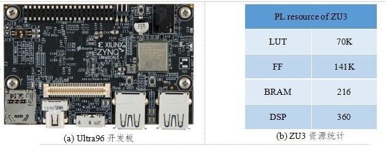
图 1 Xilinx提供的FPGA开发环境介绍
1.2 动机
为了达到检测精度与能耗的平衡，我们团队选择并优化了面向端侧的轻量级神经网络框架。并针对ZU3的资源限制，精简了我们团队设计的一个可以支持通用网络的DNN加速器(HiPU)，将其部署在ZU3的PL侧。主要工作分为针对硬件平台的算法优化和架构设计优化两部分：
算法上的优化主要有：
1) 选择ShuffleNet V2作为特征提取的主框架；
2) 选择YOLO作为单目标位置的回归框架；
3) 对神经网络进行8bit量化。
HiPU的优化主要有：
1) 支持CONV，FC，Dep-wise CONV，Pooling，Ele-wise Add/Mul等操作，峰值算力为268Gops，效率大于80%；
2) 支持Channel shuffle、divide、concat操作，且不消耗额外时间；
3) 提供C、RISC-V汇编接口的API，调度灵活；
4) HiPU完全由PL侧实现，不依赖PS侧。PS主要工作负载为图片预处理和结果输出上。
经过上述优化，我们团队的设计在比赛方的数据集上测得如下结果：准确率IoU为61.5%；能耗为9537J，帧率为50.91Hz，功率为9.248W。
2. 算法框架设计
2.1 任务分析
本次竞赛的训练集由大疆提供，部分图片如下图所示。在确定算法之前，我们团队首先对训练数据集的特点进行了分析：
1) 图片尺寸均为360x640，不需要对图片进行resize操作进行归一化；
2) 所有测试图片均是无人机视角。标定框的大小从36像素到7200像素不等，算法需要支持各种大小的目标检测；
3) 所有图片共12大类(95个子类），包括boat (7), building (3), car (24), drone (4), group (2), horse-ride(1), paraglider(1), person (29), riding (17), truck (2), wakeboard(4), whale(1)类别。算法在设计时需要对这12类物体进行分类；
4) 即使测试图片中出现多个相似的目标，标定框也是指定固定的一个目标。即训练时需要适当的过拟合。
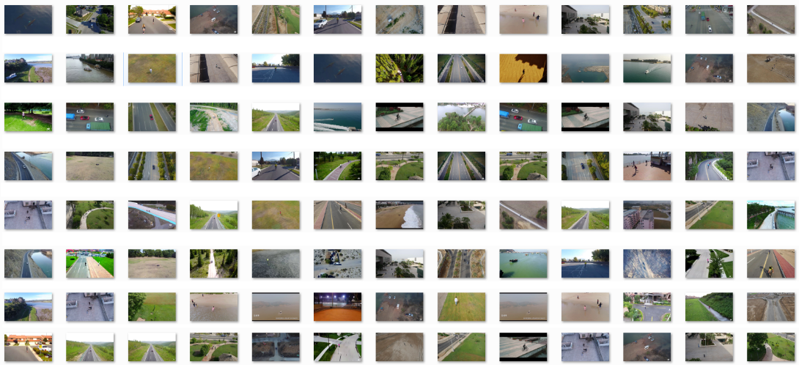
图 2 训练集的部分图片
2.2 单目标检测网络选择
为满足移动端的检测实时性，我们团队最终选定了YOLO作为基础检测算法。并将其中的特征提取网络替换为轻量级的ShuffleNet V2，其参数规模略大于1X。如下图所示为我们定制的单目标检测网络，ShuffleDet。
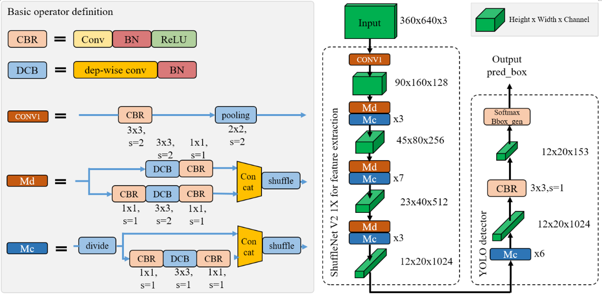
图 3 ShuffleDet的网络结构示意图
2.3 神经网络的训练与量化
我们团队首先在ImageNet数据集上预训练一个标准的ShuffleNet V2分类网络。待模型收敛后，将其中的特征提取部分的参数迁移到ShuffleDet网络中。使用比赛方的训练集进行其他层的参数的训练。
为了适应FPGA的定点运算，待整体参数训练完成后，需要对所有参数进行量化操作。我们团队将网络参数和feature map均量化为8bit定点。量化过程主要分为以下几步：1) 将BN层合并到参数中；2) 将合并后的参数进行对称量化；3) 量化后的参数如果直接使用，精度损失过于严重。因此量化后还需要对参数进行fine tune。如下图所示为量化操作的示意图。
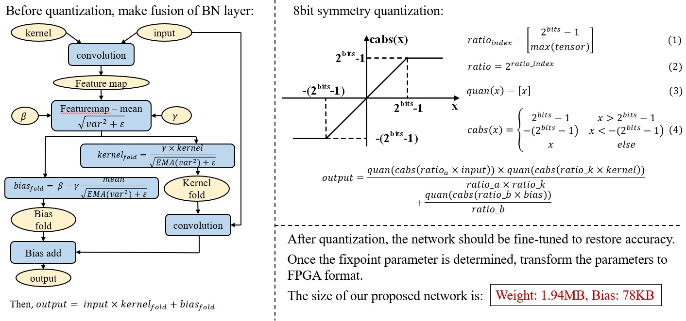
图 4 网络参数的量化流程
经过量化后，我们使用的ShuffleDet网络的卷积层数约为74层，权重约为1.94MB，Bias约为78KB。
3. 计算架构框架设计
3.1 HiPU整体介绍
由于我们团队设计的HiPU主要面向专用集成电路（AISC），FPGA上的设计实现主要是进行功能的验证，因此，针对赛方提供的计算平台，我们需要进行适当的裁剪需，以适应ZU3的资源。如下图所示为裁剪后的HiPU设计框图，及其特性。HiPU工作在233MHz，其峰值算力为268Gops；采用C/RISC-V汇编作为编程接口，卷积效率平均在80%以上。
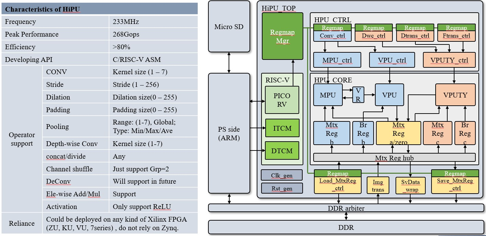
图 5 HiPU的结构框图与特性
HiPU支持各种常见的NN运算，包括：CONV，FC，Dep-wise CONV，Pooling，Ele-wise Add/Mul等运算。其中FC也可以做到接近100%的计算效率。
HiPU支持channel方向的shuffle，divide，concat操作。当这些操作紧接在卷积运算之后时，可以在硬件上进行合并，不消耗额外的时间。
HiPU可以工作在任何种类的Xilinx FPGA上，不受Zynq架构的限制。
HiPU底层实现矩阵运算，向量运算，以及标量运算。在做好调度的情况下，可以支持任意类型的并行计算。未来将实现稀疏矩阵运算的优化，从而支持高效率的DeCONV运算，feature map稀疏优化。
3.2 HiPU优化点分析
1) 通过层间级联减少所需的DDR带宽
HiPU设计性能有两个重要的方面：一个方面是MAC运算单元的利用率；一个是数据传输网络是否可以匹配MAC所需的数据。其中数据传输网络的限制大多数来自DDR接口。本设计针对DDR接口进行专门的优化。
由于HiPU中SRAM的大小限制，无法将一层feature map的数据完全放在HiPU的SRAM中。采用平常的计算次序则需要将每一层的feature map计算结果返回到DDR中存储。这样一来每一层的feature map数据都需要一次DDR的访问，对DDR的带宽需求非常大，也会消耗额外的功耗
我们团队通过层间级联的方式降低DDR的带宽需求。以ShuffleNet的bottleneck为分界，从每个bottleneck的输入处从DDR读取一行feature map，依次计算完所有的层后，输出的一行feature map才写回到DDR。依次计算完所有行。如下图所示为Module C的层间级联计算次序。
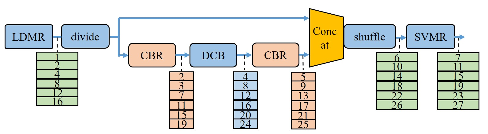
图 6 Module-C采用层间级联计算方式
2) 输入图像格式转换以提升处理效率
HiPU一次并行计算8个输入channel。然而网络第一层输入图像仅有RGB这3个通道，导致HiPU计算效率仅为3/8。因此，我们团队针对输入图像设计了一个转换模块。如果Conv1的kernel的width为3，则将输入图像的通道从3扩展到9。最终使得第一层的处理效率从0.38提升到了0.56，其转换示意图如下图所示。
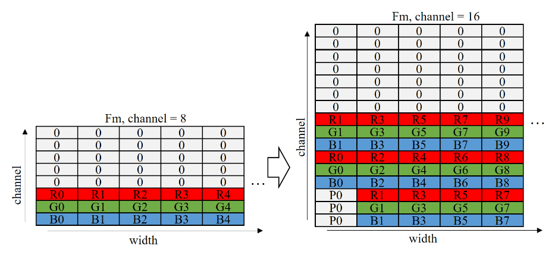
图 7 输入图像在行方向上的转换
3.3 系统优化设计
1) 图像解码与卷积神经网络计算并行化
由于HiPU仅仅依赖Zynq的PL侧的资源进行设计，PS侧的资源可以空出来做系统IO相关的工作。我们团队在处理当前图片的检测运算时，在PS侧预读并解码下一幅图片，提高处理的并行度，从而使整体检测帧率从30.3Hz提高到50.9Hz。
如下图所示为图像解码与卷积神经网络并行化的示意图。
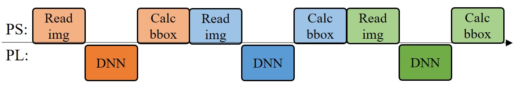
(a) 并行化之前的工作流程
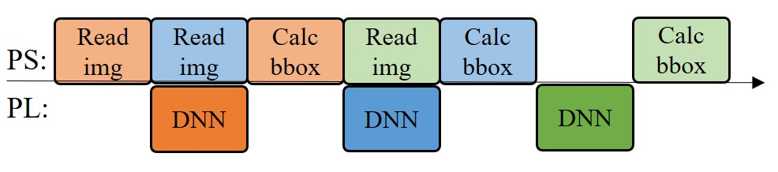
(b) 并行化之后的工作流程
图 8 图像解码与卷积神经网络并行化的示意图
2) 使用C代码加速PS侧原来的Python代码
使用C代码重构PS侧比较耗时的操作，并在Pynq框架中采用ctypes接口调用重构的C代码： 1) 预先计算PL侧数据中置信度和bbox坐标的地址指针；2) 找到最大的置信度和对应的BBox的坐标，然后根据相对坐标计算出绝对坐标。
3) 使用门控时钟降低PL侧的能耗
为了降低系统的能量消耗，设计了门控时钟策略。当HiPU计算完一张图片的时候自动关闭时钟，下一张图片开始计算的时候再激活时钟。设置这个策略主要基于以下两个原因：
首先，系统对jpg格式图片解算的时间不固定，当SD卡型号不固定的时候，其均值在7ms-12ms之间，部分图片解算时间最大值可以到达100ms；
其次，系统的功耗测量进程和其他额外开销会占用一部分的cpu时间，并且PS和PL共享DDR带宽，这导致了HiPU在166Mhz的时帧率到达约50hz，但是升高HiPU到200Mhz时，系统处理帧率仍然保持在50hz左右。
上述两个原因会导致HiPU处理时间和图片jpeg解算时间匹配变得不固定；当HiPU处理图像时间比图像解算时间短时， HiPU会“空跑”浪费能量。另外，针对抢占DDR带宽的情况，还需继续优化。
4. 竞赛结果分析
如下表所示为DAC19的竞赛结果，全球共有58支队伍注册了FPGA比赛任务，但最终只有11支队伍提交了设计（完赛率19%），相比GPU赛道52支队伍注册比赛，最终有16支队伍提交设计（完赛率30.8%），也可以反应出FPGA比赛任务的难度。最终我们团队获得了第2名的成绩。冠军为iSmart3，由UIUC、IBM、Inspirit IoT公司联合组队，季军为SystemsETHZ来自ETH Zurich的队伍。通过与其他团队的交流，我们团队使用的神经网络规模是最大的，优势是高性能的DNN加速器，遗憾是算法方面的优化还不到位，最终竞赛成绩如下：
DAC19 系统设计竞赛排名
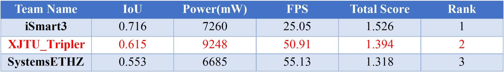
资源情况比较
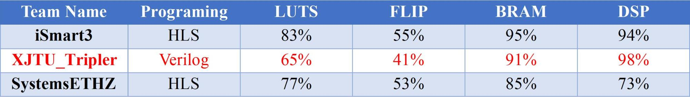
我们设计的ShuffleDet算法同时在TX2平台上也进行了部署，下表是两者的分析对比。可以看出8bits量化后造成了0.056的IoU损失（-8.3%），但带来了28.87的帧率提升（+131%）和8309J的能量减少（-46.56%）。
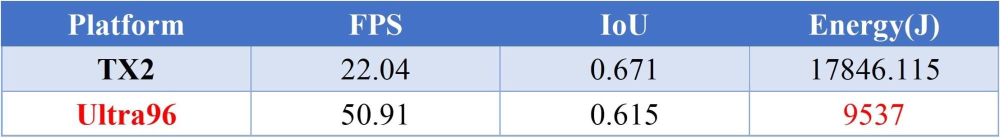
图9 ShuffleDet在TX2和Ultra96 FPGA平台上的性能比较
XJTU-Tripler是由西安交通大学 人工智能与机器人研究所 任鹏举副教授所在的认知计算架构小组完成的设计。
团队成员：赵博然，赵文哲，夏天，陈飞，樊珑，宗鹏陈，魏亚东，涂志俊，赵之旭，董志伟等